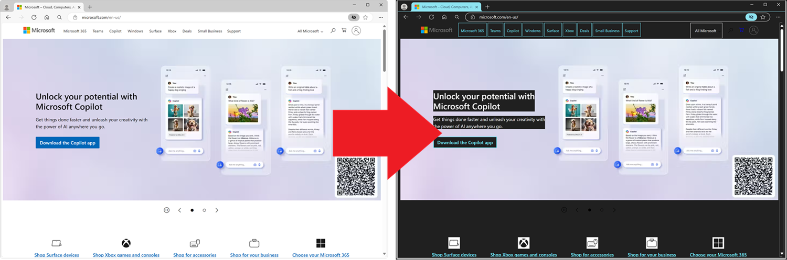

Blog posts related to the implementation of the web platform in Microsoft Edge, covering web APIs and features,
DevTools, WebView 2, and Progressive Web Apps.

Removing -ms-high-contrast and embracing standards-based forced colors in Microsoft Edge
The Edge team is excited to announce that the non-standard -ms-high-contrast media feature and
-ms-high-contrast-adjust property are now completely removed from Edge, starting with version 138.
The Edge 2025 web platform top developer needs dashboard
Interop is the most effective way we have to collectively catch up on implementation differences and bugs. The
project has a good track record of bringing implementations into alignment for the areas that are selected.
However, there’s more that web developers need.
Bring your PWA closer to users with App Actions on Windows
We’re excited to announce that App Actions on Windows are now available for Progressive Web Apps (PWAs).
Starting
with Edge version 137, you can now publish your PWA to the Microsoft Store to enable App Actions on Windows.
Simplified access to AI in Microsoft Edge: Introducing the Prompt and Writing Assistance APIs
We’re excited to introduce experimental web APIs in Microsoft Edge that make it easier than ever for web
developers to integrate AI into their web applications. The Prompt API and Writing Assistance APIs — now
available
as developer previews in Edge Canary and Dev channels — give you access to a powerful small language model,
Phi-4-mini, that is built into the Edge browser.
ARIA Notify is designed to address scenarios where a visual change that’s not tied to a DOM change and not
accessible to assistive technology users, happens in the page. Examples include changing the format of text in a
document, or when a person joins a video conference call.
If you work on a large code base with multiple teams, you probably deal
with large amounts of logs when inspecting your webapp. This is an area that we’re interested in improving, and
are proposing console.context(), a new feature to enable helpful contextual logging in
DevTools.
Minding the gaps: A new way to draw separators in CSS
In this article, we’re introducing CSS gap decorations, a new proposal which we would love your feedback on. If
this is of interest to you, read this article and help us shape the future of CSS by providing your feedback.
Empowering Microsoft Edge Add-ons developers with faster reviews
One of the key issues we hear from extension developers is the time that Microsoft takes to review their
extensions. We’re implementing several measures to improve this process. This will allow developers to iterate
faster, bringing more innovation to their users, and making the extensions more reliable, robust, and secure.
Microsoft Edge is very pleased to announce our participation in the fifth edition of the Interop project:
Interop
2025. We’re joining forces with our colleagues at Apple, Bocoup, Igalia, Google, and Mozilla, to improve
interoperability on the web platform.